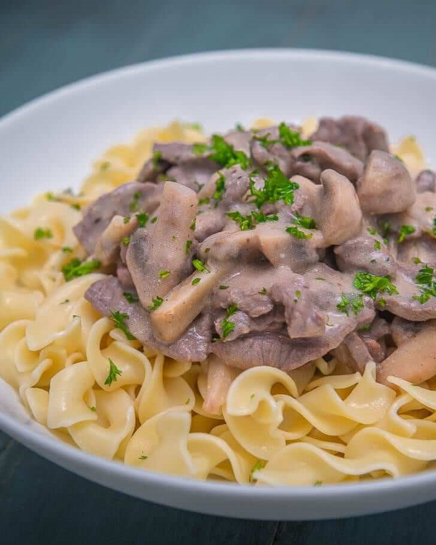

Beef Stroganoff Recipe
What is Beef Stroganoff?
With tender, juicy beef strips and a delightfully creamy sauce, beef stroganoff is one of the best comfort foods out there. You can't go wrong with its perfect combination of beef and mushrooms over warm pasta or rice. The addition of sour cream lends a nice twist, cutting through the richness of the mushrooms and butter otherwise. Garlicky and sweet, you and your family will be craving this long after you've emptied your plate!
Ingredients
1 lb. beef sirloin
1 piece onion
8 ounces button mushroom
1/2 cup sour cream
3 tablespoons cooking oil
Salt and ground black pepper to taste
1 lb. egg noodles
2 tablespoons all-purpose flour
2 tablespoons butter
1 piece Knorr Beef Cube
2 cups water
Instructions / How to Cook
1. Make the roux by melting butter in a saucepan. Add flour and Knorr Beef Cubes. Continuously stir while cooking for 3 to 5 minutes. Pour water into the saucepan. Stir until all ingredients are well blended. Turn the heat off. Set roux aside.
2. On a clean pan, heat oil. Saute onion and mushroom until the onion softens.
3. Add beef. Saute for 3 minutes or until light brown.
4. Pour-in roux. Stir. Continue cooking in medium heat for 3 minutes. Stir the mixture once in a while.
5. Adjust heat to low. Add sour cream and season with salt and ground black pepper.
6. Top over egg noodles. You can also have this with rice or pasta.